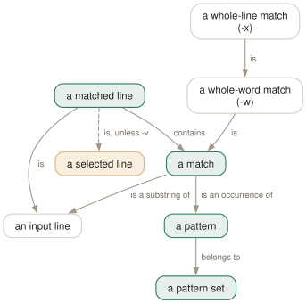

Day 02
Saying what you mean
Case, inversion, word and line boundaries, and how to hand grep more than one pattern.
By the end of today you can
- say exactly what
-wtests, and predict when it will refuse a match you expected - give grep several patterns three different ways and know which one a script should use
- explain why
-vwith two patterns is NOR, not two separate negations
One set of patterns, one decision per line
grep does not run your patterns one after another. It collects every pattern you gave it — the operand, each -e, every line of each -f file — into a single set, and asks one question of each input line: does it match any of them. Everything on this page is a way of sharpening that question.
That the patterns are ORed is worth sitting with, because it means -v does not distribute over them. grep -v -e foo -e bar does not mean “not foo, and separately not bar”; it means “not (foo or bar)”. The two happen to coincide, by De Morgan, but the reasoning that gets you there matters once the patterns get complicated.

-e, by -f — joins one set, and a line needs to match only one member of it. -w and -x narrow what counts as a match, and -v flips the very last step. That is why -x makes -w redundant rather than conflicting with it: a match filling the whole line already has non-word characters on both sides, namely the ends of the line.Case, and who decides what case means
-i folds case in the pattern and in the data. Its companion --no-ignore-case exists so that a wrapper script can cancel an -i it did not add: the two override each other and the last one on the command line wins.
$ printf 'CAFE\ncafé\nCAFÉ\n' > u.txt
$ LC_ALL=en_US.UTF-8 grep -i 'café' u.txt
café
CAFÉ
$ LC_ALL=C grep -i 'café' u.txt
café
Bounding the match: -w and -x
These two are the most misread options in grep, because both look like they constrain the pattern and in fact both constrain the substring that the pattern matched.
-w- The matched substring must start at the beginning of the line or be preceded by a non-word character, and end at the end of the line or be followed by one. Word characters are letters, digits and
_. -x- The match must be the whole line — as if you had wrapped the pattern in
^(...)$. The manual notes that-w“has no effect if-xis also specified”, and the olog above shows why that is structural rather than a special case.
$ printf 'foo\nfoobar\nfoo-bar\n_foo\nfoo bar\n' > w.txt
$ grep -w foo w.txt
foo
foo-bar
foo bar
$ grep -x foo w.txt
foo
Note what -w kept and what it dropped. foo-bar is in, because a hyphen is not a word character. _foo is out, because an underscore is. If that is not the boundary you meant — and for identifiers it usually is not — you need a bracket expression of your own, which is tomorrow.
Handing grep more than one pattern
Three spellings, and they are not interchangeable in a script.
- A newline inside the operand.
grep 'alpha\ngamma' fwith a real newline works, and is how the first synopsis form is defined, but it is unreadable in a script and a nightmare to quote. -e, repeated. Explicit, and the only way to use a pattern that starts with-:grep -e -v filesearches for the string-v.--does the same job for the whole command line.-f FILE, one pattern per line, repeatable and combinable with-e.-f -reads the patterns from standard input, which is how you feed grep the output of another command.
$ cut -d, -f1 suspect-ids.csv | grep -f - audit.log
$ grep -e '^ERROR' -f known-noise.txt app.log
ERROR boom
timeout hit
Today's habit
The single highest-value thing on this page is the two-pattern noise filter. Almost every log you read has two or three lines of chaff for every line of signal, and -v -e ... -e ... is how you get rid of them in one pass with an exit status you can still trust.
# ~/grep-recipes.sh
#
# Day 2: strip the noise before reading a log. One pass, one status.
grep -v -e ' DEBUG ' -e '/health' -e 'favicon.ico' "$1"
# Day 2: patterns from a pipe - '-f -' reads the pattern list on stdin.
cut -d, -f1 ids.csv | grep -f - audit.log
New vocabulary
Commands
| Command | Does |
|---|---|
grep -e -v file.txt | Search for the literal string -v. -e protects a pattern that starts with a dash. |
grep -f patterns.txt data.txt | Take patterns from a file, one per line. The workhorse for long lists. |
cut -f1 ids.csv | grep -f - data.txt | Patterns from a pipe. -f - reads them from standard input. |
Options
| Option | Does |
|---|---|
-i, --ignore-case | Match regardless of case. What counts as “the same letter” depends on the locale. |
--no-ignore-case | Cancel an earlier -i. The last of the two on the line wins. |
-v, --invert-match | Select the lines that did not match. Applied once, after all patterns. |
-w, --word-regexp | Require the matched substring to be bounded by non-word characters or line ends. |
-x, --line-regexp | Require the match to be the entire line. Silently overrides -w. |
-e PAT, --regexp=PAT | Add a pattern. Repeatable, and combinable with -f. |
-f FILE, --file=FILE | Add every line of FILE as a pattern. An empty file matches nothing at all. |
-y | Undocumented synonym for -i. In neither the man page nor --help, but 3.12 accepts it. |
Drillsdo these in a real terminal, today
Self-check
Answer out loud first, then unfold.
You run grep -w '[a-z]*foo[a-z]*' over a file containing the line x_foo_y and get nothing. The pattern clearly can match part of that line. What is -w objecting to?
-w does not test your pattern, it tests the substring that matched. Here [a-z]* cannot cross the underscores, so the longest thing the pattern can match is foo — and foo sits between two underscores, which are word-constituent characters. Both edges fail the test, so the line is rejected.
Word-constituent means letters, digits and underscore. If you want underscores to count as separators, say so explicitly: grep -E '(^|[^[:alnum:]])foo([^[:alnum:]]|$)', or use \b from Day 3 and accept the same definition.
A colleague's script has grep -i "$pattern" "$file" and it stops matching accented text when the script is run from cron. Nothing in the script changed.
cron runs with a bare environment, so the locale falls back to C. Under LC_ALL=C every byte is its own character and case folding only knows about ASCII: grep -i 'café' matches café but not CAFÉ. Under en_US.UTF-8 it matches both.
-i is not a fixed rule, it is a question asked of the locale. Day 8 is about the other things the locale silently decides for you — and about the cases where you should force LC_ALL=C on purpose.
You need to exclude two patterns, so you write grep -v foo file | grep -v bar. A colleague writes grep -v -e foo -e bar file. Are these the same, and does it matter?
They produce identical output. grep ORs its patterns together into one decision and then -v inverts that single result, which by De Morgan is exactly “not foo and not bar” — the same thing the pipeline computes in two passes.
The single grep is better: one process, one pass over the data, and — the part that actually bites — a meaningful exit status. In the pipeline the status you get back is the second grep's, so a failure to open file in the first one is thrown away entirely.
Your script does grep -f "$idfile" audit.log to find any mention of a list of user IDs. $idfile comes out empty one morning. What does the script report?
Nothing, with exit status 1. The manual is explicit: “The empty file contains zero patterns, and therefore matches nothing.” This is the right answer mathematically — an empty union matches nothing — but it is the opposite of what an empty pattern does.
A single empty pattern, grep '' file, matches every line, because the empty string occurs in every line. So -f on an empty file gives you nothing and -e '' gives you everything. Check that the file is non-empty before you trust the result.
Cheat sheet
-i fold case (locale decides what that means; -y is an undocumented alias)
--no-ignore-case cancels it; the LAST of the two on the line wins
-v invert - applied once, AFTER all patterns are ORed together
-w matched substring must be bounded by non-word chars or line ends
word chars are letters, digits and _ (so _foo fails, foo-bar passes)
-x match must be the whole line; makes -w redundant, never conflicts
# giving grep several patterns - all three join ONE set, ORed
grep -e PAT -e PAT file # repeatable; also protects a leading '-'
grep -f pats.txt file # one per line; EMPTY FILE MATCHES NOTHING
cmd | grep -f - file # patterns from a pipe
grep -- -v file # '--' ends options, like -e for the whole line
Everything through Day 02
Commands
| Command | Does |
|---|---|
grep root /etc/passwd | Search one named file. No filename prefix on the output. |
grep root /etc/passwd /etc/group | Search several. Output gains a file: prefix automatically. |
grep root | No file operand: read standard input. From a terminal, this waits for you. |
grep -r root | No file operand and -r: search the working directory instead. |
cmd | grep root - | A file operand of - is standard input, mixable with real files. |
echo $? | Read the status grep just returned. The habit this whole day is about. |
grep -e -v file.txt | Search for the literal string -v. -e protects a pattern that starts with a dash. |
grep -f patterns.txt data.txt | Take patterns from a file, one per line. The workhorse for long lists. |
cut -f1 ids.csv | grep -f - data.txt | Patterns from a pipe. -f - reads them from standard input. |
Options
| Option | Does |
|---|---|
-V, --version | Print the version and exit. Know which grep you are actually running. |
--help | Print the option summary and exit. Shorter and better organised than the man page. |
-- | End of options. Everything after it is a pattern or a filename, never a flag. |
-i, --ignore-case | Match regardless of case. What counts as “the same letter” depends on the locale. |
--no-ignore-case | Cancel an earlier -i. The last of the two on the line wins. |
-v, --invert-match | Select the lines that did not match. Applied once, after all patterns. |
-w, --word-regexp | Require the matched substring to be bounded by non-word characters or line ends. |
-x, --line-regexp | Require the match to be the entire line. Silently overrides -w. |
-e PAT, --regexp=PAT | Add a pattern. Repeatable, and combinable with -f. |
-f FILE, --file=FILE | Add every line of FILE as a pattern. An empty file matches nothing at all. |
-y | Undocumented synonym for -i. In neither the man page nor --help, but 3.12 accepts it. |